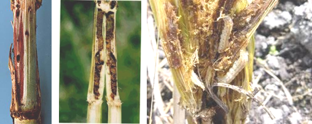
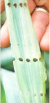
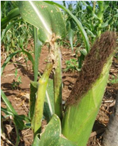
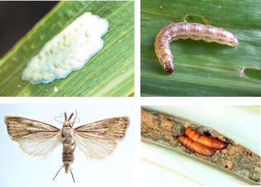

| Home |
| SORGHUM |
| 1. Sorghum Shootfly |
| 2. stem borer |
| 3. pink stem borer |
| 4. shoot bug |
| 5. earhead bug |
| 6. sorghum midge |
| 7. plant lice (Aphids) |
| 8. earhead web worm |
| 9. gram caterpiller |
| 10. plant bug |
| 11. stink bug |
| 12. mirid bug |
| 13. slug caterpiller |
| 14. Leaf roller |
| 15. flea beetle |
| 16. red hairy caterpiller |
| 17. semilooper |
| 18. weevils |
| 19. wingless grasshopper |
| Integrated Pest Management |
| Questions |
| Download Notes |
PESTS OF SORGHUM :: Major Pests :: Stem Borer
2. Stem borer: Chilo partellus (Crambidae: Lepidoptera)
Distribution and status: India, Pakistan, SriLanka, Indonesia, Iraq, Japan, Uganda, Taiwan, Sudan, Nepal, Bangladesh and Thailand.
Host range: Maize, sorghum, sugarcane, bajra, rice, Sorghum halepense, finger millet, etc.
Damage symptoms: It infests the crop a month after sowing and the damage persists upto emergence of ear heads. Central shoot withering leading to “dead heart” is the typical damage symptom. Bore holes are visible on the stem near the nodes. Young larva crawls and feeds on tender folded leaves causing typical “shot hole” symptom. Affected parts of stem may show internally tunneling caterpillars.
 |
|
Bore holes and tunneling by caterpillars |
|

|
 |
Shot hole symptom |
Broken stem |
 |
ETL: 10% dead heart |
Management
- The stubbles should be ploughed up during winter and burnt to destroy the hibernating larvae.
- Grow resistant cultivars like E 302, E 303, IS 2205, ICSV 700
- Dead hearts should be pulled out and used as fodder or buried in manure pits.
- Sow lab lab or Dolichos as an intercrop in the ratio of 4:1 to minimise the stem borer damage.
- Set up light trap till midnight to attract and kill the stem borer moths.
- Bio-control agents viz.,Trichogramma chilonis (egg parasitoids) minutum, Bracon chinensis and Apanteles flavipes, (larval parasitoids) should be encouraged.
- Mix any one of the following insecticides with sand to make up the total quantity of 50 kg and apply in the leaf whorls. Phorate - 10 G 8 kg, carbofuran 3 G 17 kg, endosulfan 4D 25 kg or spray endosulfan 35 EC 750 ml (or) carbaryl 50 WP 1 kg (500 L spray fluid/ha).